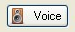

Gilbert 21 - creating records from Evernote
To create records from an Evernote notebook, you must first have an Evernote account. Setting up an Evernote account and using Evernote apps is dealt with in this topic.
Once you have an Evernote account and one or more Evernote notebooks containing notes on which you wish to base biological records, you export them for use in Gilbert 21. (Prior to November 2012 you could access Evernote notebooks directly from Gilbert 21 but after Evernote changed some access policies must first export notes from Evernote's own free desktop application before you can import them into Gilbert 21.)
In your Evernote Desktop application, select one or notes from a notebook and then select the File->Export function. Choose to export the notes in the ENEX format. Save the export file to a convenient location on your PC where you can import it from Gilbert 21.
Use the Open files item from the Gilbert 21File menu with the Files of type option set to Evernote export files (*.enex). Find your export file - Gilbert 21 will make candidate records from all the notes in the export file. For any Evernote note that was geo-tagged at the time it was made - e.g. those created using an Evernote smart-phone app - all the location and date information is filled in automatically.
The location information is just Gilbert 21's suggested locations based on the GPS location at which the tag was recorded and the data in its place name gazetteer. You don't have to accept any of these suggestions and you are free to edit any of the information.
To complete the records, you need to indicate, for each one, what was seen. When you invoke What tab of the record details form for one of these records, it will automatically play any sound file associated with it (see notes on playing AMR files below). You can replay the sound from any tab of the record details form by clicking the Voice button. So you just listen to your own voice speaking what was seen and complete the form
Your voice notes may record much more than what was seen. For example they could include extra information about the location if the animal or plant was not seen exactly where the note was made, or it may record information that can be recorded as a personal note rather that a biological record per se.
When you have finished creating records, save them (e.g. by selecting the appropriate item from the File menu). Note that you don't have to process all of the records at once. If you only do some of them, the next time you open the same data logger files again, any corresponding records that you have already saved to the database will be shown in full - so you can just pick up where you left off and start on the next unprocessed candidate record.
Using other types of note from Evernote
You are not limited to creating records from Evernote notes with attached voice recordings. Gilbert 21 will open any Evernote note and use it as the basis for a candidate record, whether or not is has an audio file attached. For example you can make a geo-tagged Evernote note which has an attached photo. Gilbert will use use the photo as a media attachment (see the Media tab of the Record Properties form). Or you can simply create an Evernote note by typing - the title of the note will be used by Gilbert 21 to populate the Common name field of the record and anything you type into the body of the note will be used by Gilbert 21 to initialise the Comments field of the record.
Managing Evernotes
Gilbert 21 does not manage your Evernote notes for you. So, for example, it wont delete or otherwise move notes from a notebook once it has made records from them. It is up to you to do this kind of Evernote housekeeping outside of Gilbert 21. Probably the most convenient way of doing this is via Evernote's own free desktop application.
Playing AMR files
Note that Evernote smart-phone apps will probably produce sound files with an 'AMR' extension. Gilbert 21 can't play these files itself (as it does with WAV files) and so must rely on a third-party application to play them.
To find out which application, on your computer, is the default one for playing AMR files, use Windows Explorer to locate an AMR file (e.g. in the Evernote Download file folder indicated by your options) and then double-click the AMR file. If you have a default application capable of playing Evernote AMR files, it will start and play the file at this point.
If you haven't you will need to get one. RealPlayer and Apple Quicktime can both play AMR files. Out of these two, RealPlayer seems to give the best results. To use either, you must install it on your computer and make sure that it is the default application for playing AMR files (as described above). However, you may be better results with the Ffplay application as described below.
Ffplay is a command line application that Gilbert 21 can use to play AMR files. You can download the 'ffplay.exe' application from the Gilbert 21 website. (Make sure you get the right version for your computer - 32 or 64 bit. If you are unsure what your computer is, check the System settings in the Control Panel - it will tell you there if you computer is 64 bit. Otherwise it's probably 32 bit.)
To use Ffplay, first download and then unzip the application to a convenient folder on your computer. Then there are a couple of more data options on Gilbert 21's options dialog that you need to look at:
Created with the Personal Edition of HelpNDoc: Create iPhone web-based documentation